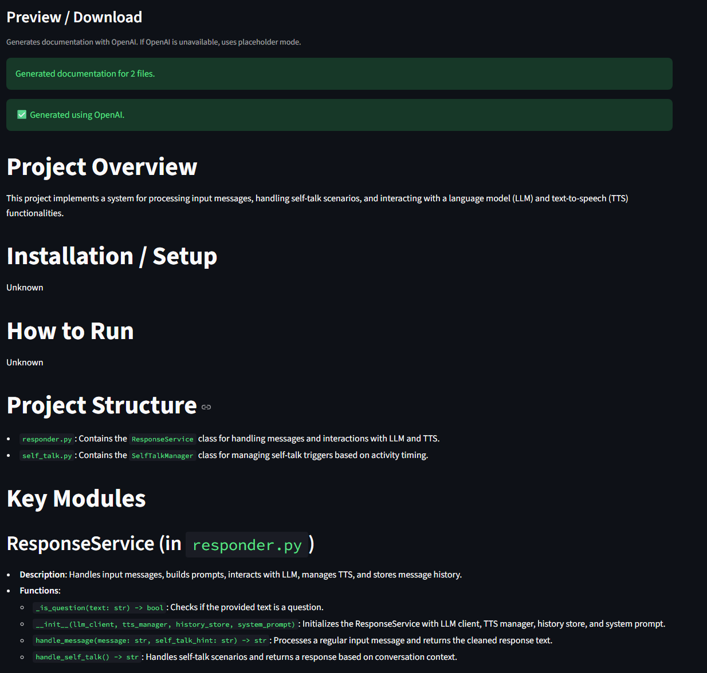

Code Documentation Generator
The Problem
Software documentation is often incomplete, inconsistent, or entirely missing. While large language models can generate summaries, they introduce critical challenges in real-world applications such as hallucinated or incorrect content, unstable formatting, non-deterministic outputs, and difficulty parsing large or complex codebases.
This project addresses the need for a reliable, structured system that can automatically generate high-quality documentation from source code while maintaining consistency and control.
Approach
I designed a production-oriented NLP pipeline that integrates LLM generation into a deterministic system.
System Architecture
- Streamlit UI — user interaction and file upload
- Renderer layer — orchestration and chunking
- LLM client — schema-constrained generation
- Prompt layer — hallucination control and formatting stability
This separation of concerns improves scalability, reliability, and maintainability.
Key Design Components
- Schema-Constrained Generation — enforced structured outputs using JSON Schema to ensure consistent formatting and reduce hallucination and parsing errors
- Hierarchical Summarization Pipeline — used file-level structured summaries followed by project-level aggregation to improve coherence and scalability for large codebases
- Syntax-Aware Chunking (AST-Based) — used Python AST parsing to preserve code structure and avoid splitting functions or classes mid-block
- Hallucination Mitigation — applied strict prompt constraints, JSON-only output, and rules such as “Do NOT invent APIs”
- Robust Fallback Strategy — used OpenAI generation as the primary path and deterministic placeholder generation as a fallback to ensure graceful degradation
Demo

Results
- Built a fully functional system that converts raw code into structured documentation
- Ensured stable and consistent outputs through schema enforcement
- Maintained usability even under API failures through graceful degradation
- Delivered an interactive UI supporting file upload, preview, and export
Reflections
This project showed me that LLM systems need strict structure and constraints to be reliable in production settings. Schema enforcement is critical for production-grade generative AI, and multi-stage pipelines improve both scalability and output quality.
It also shifted my perspective from prompt-based experimentation toward system-level design thinking, where defensive engineering matters just as much as model capability.
Limitations
- Documentation quality still depends on the clarity of the source code
- Very large projects may require further performance optimization
- Strict schemas can limit expressive flexibility
- The system cannot infer undocumented business logic
Next Steps
- Improve documentation richness while maintaining structure
- Support additional programming languages
- Add version-aware documentation updates
- Integrate the workflow into enterprise developer environments
Why This Project Matters
This project demonstrates my ability to build reliable, production-oriented AI systems, integrate LLMs with structured and deterministic pipelines, and design solutions that balance flexibility with robustness. It reflects my focus on building AI systems that are not just powerful, but also reliable and usable in real-world environments.